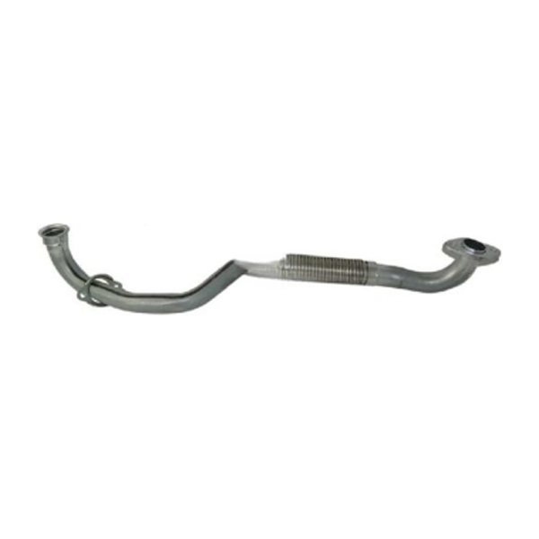

Parts › Fuel, LPG & Exhaust › 43060-301

Available
Email for a quote
Toyota 43060-301 Exhaust Pipe
| OEM part number | 43060-301 |
| Fits | Toyota |
| Models / notes | 7FG15 |
| Category | Fuel, LPG & Exhaust |
| Type | Aftermarket replacement |
Send us the quantity you need and we'll reply with pricing, usually within 24 hours. Not the exact part? We can source it. Send the part number or a photo.